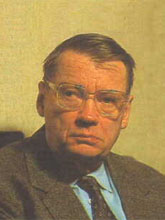
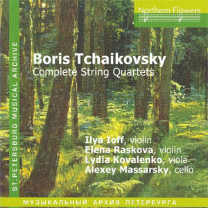
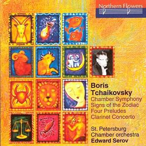
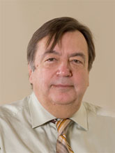
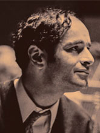

L'arbre qui cache la forêt est évidemment Piotr Ilitch Tchaïkovsky (1840-1893), l'un des compositeurs préférés du grand public. Celui-ci raffole des symphonies, concertos et autres ballets, sans oublier la musique de chambre, en particulier trois quatuors et un sextuor à cordes et l'immense Trio à clavier (ici dans la légendaire version de Argerich, Kremer et Maisky). L'amateur d'opéras peu connus devrait également partir sur les traces des 11 oeuvres du genre dont seuls La Dame de Pique et Eugène Onéguine sont couramment représentés en Occident. Voici des liens bienvenus vers les raretés : La Pucelle d'Orléans, Le Voïévodee, Ondine (Un des rares extraits de la partition non détruits par le compositeur insatisfait), L'Opritchnik, Vakoula le Forgeron, Mazeppa, Tcherevitchki, L'Enchanteresse et Iolanta.
Le patronyme Tchaïkovsky étant très présent dans l'annuaire russe, vous y trouverez, en triant bien, deux autres compositeurs de valeurs. Ils sont issus de l'école moscovite et parents mais pas avec Piotr Ilitch.

Boris Tchaïkovsky
L'oncle Boris (1925-1996) a bouclé ses études en 1949, au Conservatoire de Moscou, le piano avec Lev Oborine et la composition avec Nikolaï Miaskovsky, Vissarion Chebaline et Dimitri Schostakovitch. Il a travaillé pendant quelque temps à la radio, avant de se consacrer à la composition, une discipline qu'il a enseignée à la fin de sa vie.
Il a commencé par écrire dans le style appris au conservatoire (insignifiante Sinfonietta de jeunesse, 1953) puis s'est essayé au modernisme polystylistique, dans les années 1970, avant de revenir à ce qu'il faisait le mieux, une musique ancrée dans la tradition russe mais perméable aux influences occidentales. Les deux premières symphonies (n°1 , n°2 ) illustrent le chemin parcouru en 20 ans, entre 1947 et 1967. L'Etat soviétique a décerné son Prix de Musique à la Deuxième, en 1969 (Désolé pour la vidéo mais on est en Russie, heureusement la musique est très bonne). Les Variations pour orchestre sont quasiment contemporaines (1973).
La Symphonie suivante (n°3 "Sebastopol") illustre la dernière manière du compositeur davantage. Elle convainc par un retour à des harmonies expressives s'épanchant dans un cadre globalement tonal. Ecoutez son début onirique annonçant le climat sonore que développera, quelques années plus tard, le collègue ukrainien Valentin Silvestrov (1937- ). Une Quatrième symphonie (1993) existe, la plus personnelle sinon la plus intéressante, qui fait appel à une harpe soliste. Le compositeur a également écrit 4 concertos, pour clarinette, violoncelle (lyrique à souhait), violon (flirtant avec les techniques minimalistes) et piano (percussif et pétaradant à la russe dans ses mouvements rapides).

Boris Tchaïkovsky : les Quatuors
Sa musique de chambre compte six quatuors à cordes, tous enregistrés chez Nothern Flowers (n°1 , n°6) plus un éventail d'oeuvres pour formations diverses dont j'épingle celles que je peux proposer à l'écoute : Quintette et Trio à clavier, Sonate pour violoncelle & piano, Suite pour violoncelle seul et Sonate n°1 pour piano.
L'oeuvre pour piano a été (partiellement ?) enregistrée par Olga Solovieva et deux volumes sont parus chez Albany, un label que vous retrouverez sans doute plus facilement dans le catalogue Chandos.

Boris Tchaïkovsky : Symphonie de chambre
Un autre enregistrement paru chez Nothern Flowers propose quelques oeuvres intéressantes écrites pour ensembles plus étoffés dont une symphonie de chambre et une Suite du Zodiaque, pour soprano & ensemble instrumental.
A côté de ces oeuvres sérieuses, le compositeur a aussi écrit des oeuvres plus légères, dites de circonstances (alimentaires ?) telles Le Vent de Sibérie, Les Murmures de la Forêt et la Suite du Porcher. Un CD Naxos propose quelques partitions charmantes, en particulier celle inspirée par les Contes d'Andersen. Il a également écrit des musiques de film (alimentaires !) dont Le Mariage de Balzaminov, sans doute populaire en Union soviétique mais pas au-delà.
Boris Tchaïkovsky a appartenu à la génération postérieure à Schostakovitch, ce qui ne lui a pas facilité l'accès à la célébrité. Il est longtemps passé inaperçu en Occident mais les choses ont changé depuis qu'on s'est rendu compte que de grands interprètes russes (Rostropovich, Kondrashin, Barshaï, Fedoseyev, ...) avaient joué ses oeuvres, signes qu'ils les appréciaient. Le label russe Melodiya a gravé quelques enregistrements mais ils demeurent d'accès difficiles. Par bonheur, le vide est actuellement comblé par Nothern Flowers, basé à Saint-Pétersbourg (!) mais distribué par Naxos.

Alexandre Tchaïkovsky
Le neveu Alexandre (1946- ) est encore moins connu, au point qu'il demeure malaisé de trouver des enregistrements le concernant. Comme son oncle, il a étudié au Conservatoire de Moscou, seuls les professeurs ayant changé : le piano avec Heinrich Neuhaus et Lev Naumov et la composition avec Tikhon Khrennikov. Ayant reçu toutes les médailles dont les russes peuvent rêver, il a été invité à diriger la section de composition du Conservatoire moscovite, une charge toujours effective à ce jour. Quelques interprètes renommés se sont également mis au service de son oeuvre, en particulier l'altiste Yuri Bashmet (pour lequel il a écrit 3 concertos), le pianiste Boris Berezovsky et le chef letton Mariss Jansons (ici dans la Garden Symphony). Ces interprètes ont été réunis, en mars 2016, pour un Concert d'hommage au compositeur, dans la salle ... Tchaïkovsky de Moscou. Le programme prévoyait une Elégie dédiée à Tikon Khrennikov, le Concerto pour deux pianos, le 2ème Concerto pour alto ("Etude dans des couleurs simples") et la Symphonie n°4 . Une vidéo du concert a existé dont j'ai perdu la trace sans grand regret tant elle présentait des coupures intempestives aggravées par des défauts majeurs de synchronisation entre les bandes image et son (On reste en Russie !). C'est d'autant plus regrettable que la musique ne méritait pas un tel sabotage.
Bien qu'il ait toujours respecté la hiérarchie des genres - après tout on reste en Russie ! - il a absorbé et digéré les recettes du postmodernisme occidental comme en témoigne sa belle Symphonie n°3 (provisoirement indisponible), où l'on trouve de tout, des arpèges dignes de Philip Glass jusqu'à un large finale, en forme de valse déchaînée, à la manière de celle de Ravel.
Pour espérer découvrir d'autres oeuvres de ce musicien attachant, il vous faudra probablement consulter des sites russes et utiliser la graphie adaptée (Александр Чайковский !). Vous découvrirez, par exemple, ce Requiem russe, mais il est à parier que, comme moi, vous peinerez à trouver les Concertos pour violons, pour piano (n°3) et pour alto (n°1) sans parler de la 5ème Symphonie, du Concerto pour orchestre, des 3 ballets (La troupe du Kirov a monté L'Examinateur, à mille lieues de ce que l'on croit connaître de la Russie) et autant d'oratorios (L'Affaire du Tsar, créé en 2013). Je ne parle même pas des 9 opéras, qui ne font pas partie des priorités vu le retard accumulé.

André Tchaïkovsky
Ne cherchez pas le nom d'André Tchaïkovsky (1935-1982) dans l'annuaire (polonais) car il s'agit d'un nom d'emprunt, le musicien étant né Robert Andrzej Krauthammer, à Varsovie. Il est davantage connu comme pianiste (ici dans Chopin) que comme compositeur, pourtant ses deux Quatuors à cordes (n°1 et n°2) sont dignes d'intérêt. Il a travaillé pendant de nombreuses années à la composition de son magnum opus, Le Marchand de Venise, un opéra qu'il n'a jamais entendu et qui n'a été créé qu'en 2013. Le label Toccata Classics enregistre actuellement son oeuvre pour piano (Ecoute généreuse possible sur le site mentionné).